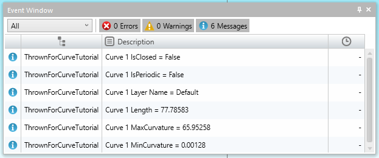

One of the few graphic objects that we have not looked at yet is the Curve object. Like other graphic objects, there is a Curves collection, and it has a Count property and an Item property. As with other collections, we can also use looping to go through the individual Curve objects. Those objects have certain properties in common with other objects, such as Length and IsClosed, but Curve objects also have many unique properties, such as MinCurvature and MaxCurvature and IsPeriodic. To begin with, let us just loop through the curves collection and display these properties:
Before running the code, open a file that has curves in it or manually create some yourself. A 3D wireframe file, perhaps from another cad system via iges, would be a good choice as those often contain many curves.
Tutorial outputs information to the EventWindow :

The Curves collection does not have a single method for creating new curve objects. Instead there are the methods Add, AddFromElement, and AddHelix. Suppose we just want to create a curve through the grouped points. We simply need to build an array out of the points in the group, and then pass that array to the Add method.
Before running the code, create some points and then group them. Notice that the curve that is created is open. That is, it starts at the first point, and ends at the last. What if we only want to create closed curves that come back to the first point? Insert the code below to do just that.
In ESPRIT EDGE you can not directly machine an ellipse. You need to convert the ellipse into a form the machine can recognize. The first function below takes an elliptical arc or circle and returns a curve. The second function below will check to see if a group is defined, and if it is it will convert all arcs and circles in the group, otherwise it prompts the user to select the ellipse.
Before running the code, create some ellipses in ESPRIT EDGE. If you wanted to automatically convert these curves to segments and arcs, then you could use the CurveApproximation manipulation, which was demonstrated in Tutorial: Feature Chain Curve Approximations.
You can add a helix using the AddHelix method. The AxisPoint1 and AxisPoint2 arguments define the center axis of the helix. The curve then starts at the StartPoint and advances by the Lead value along the center axis with each full revolution.
Suppose that you do not like the values that the Helix Curve command prompts for, or the arguments that the AddHelix method asks for, for that matter. No matter combination of input you have for your helix, a code can be written to accommodate that information.
Say you are never given a start point. Instead you have a radius and the helix always starts at a zero degree angle. Let us suppose that instead of a TaperAngle, you are given the ending radius, and that your helix always takes one revolution for a specified depth. The following code will create just such a helix. Run this code, choose a center point, and enter the other parameters, then examine the helix that results.
As another example, suppose you are given a segment for the center axis, and you just need to enter the number of revolutions and a constant radius. The following code will determine the necessary lead and make a helix with no taper.
Run this code, choose a segment and enter the other parameters. Examine the helix that results. Note that this code, as well as the previous function, creates a start point assuming that the helix is perpendicular to the XY plane. The radius value is only added to the X coordinate of the center point to find the start point, so the radius that results will not be correct for helixes in other planes.